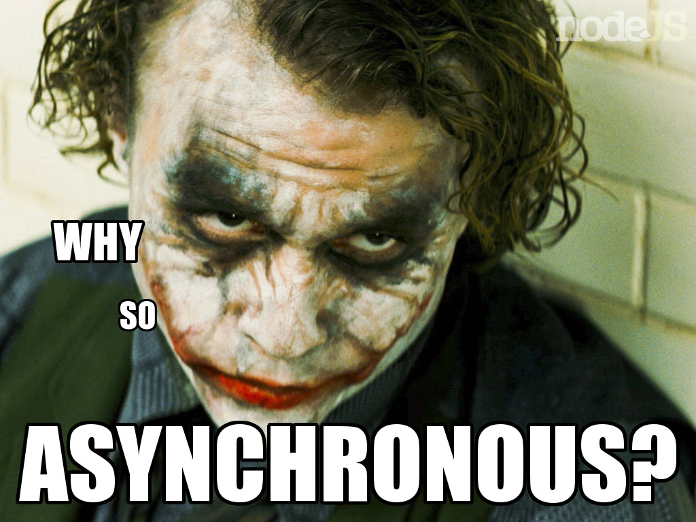

async.js
aka "How to free yourself from the callbacks pyramid and organise async code ?"
- Khalid Jebbari
- Paris.js #28
- March 27th, 2013
- @Dj3bbZ
The problem (1/2)
Code writing (in editor) and code execution (in time) have a one-one relation in synchronous (blocking) languages.
The coder expects its code to be executed in the same order it's written.
No longer true in asynchronous code.

Definitions
- High-order function:
- Function that takes anothter function as a parameter.
- Callback :
- Function that is passed to another function.
A reference to executable code, or a piece of executable code, that is passed as an argument to other code. Wikipedia
- Asynchronous callback :
- Callback that will be executed later.
Deferred callbacks are often used in the context of I/O operations or event handling. Wikipedia
The classical async example

The callbacks pyramid aka Pyramid of Doom®
The problem (2/2)
- Prisoner of the callbacks
- Code flow derived from 1:1 between code/execution
- Human is used to read code in one plan
async.js to the rescue
The toolbox to manage any asynchronous code flow
async.each
Equivalent of Array.forEach with asynchronous iterations.
async.map
Equivalent of Array.map with asynchronous transformations
Other async.js helpers
- filter, reduce and others from ECMA 5
- eachSeries, mapSeries etc. to guarantee order of execution
- eachLimit, mapLimit, etc. to limit # of parallel iterators
- series, parallel, waterfall, queue, compose, memoize, ...
Check the API, you will find something for your use case
async.auto
THE killer feature
What's async.auto ?
A simple way to describe an asynchronous dependency graph.
- Helps writing an asynchronous multi-steps algorithm
- Helps managing dependencies between those steps
- Manages the order of steps
- Gives you the results of all steps at the end
async.auto in action
async.auto's pro tip®
Don't mess with the results variable.
Use it, don't change it. You've been warned.
That's all folks ! Questions ?
async.js : https://github.com/caolan/async
Slides : https://github.com/DjebbZ/async-paris-js (feel free to read & fork !)
Me : Khalid Jebbari ; Twitter : @Dj3bbZ
Powered by CodeMirror, CodeMirror Movie, Impress.js and Foundation
Special credits to Sergey Chikuyonok (CodeMirror Movie author) for his support !